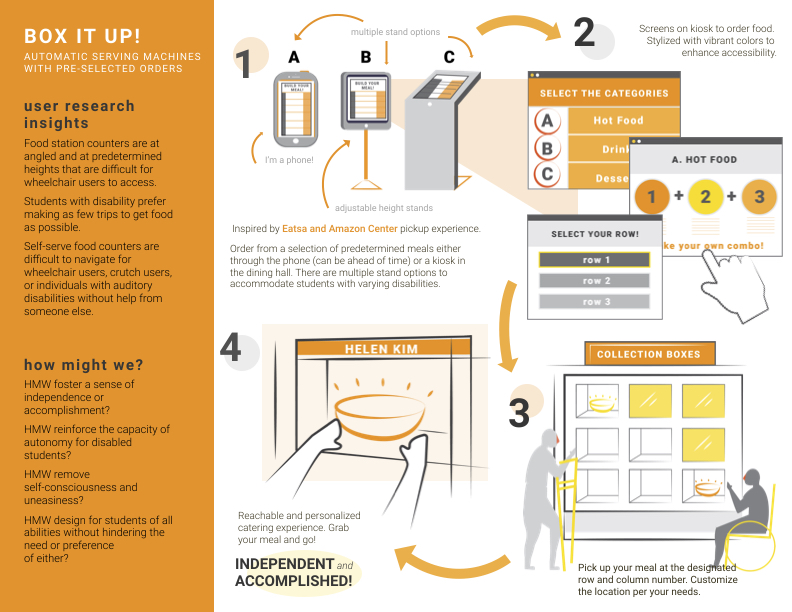

Designing an accessible dining hall experience
Topic
How might we improve on-campus accessibility at UC Berkeley?
The Problem
At dining halls, crowding is the primary source of frustration for students with and without disabilities.
Our Solution
Students can avoid crowds by ordering their meal online and picking up their food at an accessible kiosk.
 learn moreSolving last-mile medicine delivery
Topic
How might we improve the goods delivery interface between humans and autonomous vehicles?
The Problem
Picking up medicine from the pharmacy and sorting pills is an inconvenient, difficult, and stressful experience for patients.
Our Solution
Medisend is a device that sorts your pills and handles your medicine refills with the help of an autonomous vehicle system.